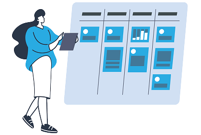
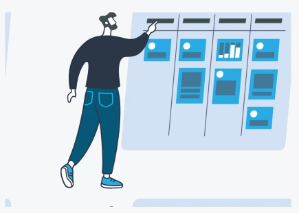

Welcome
– of 10 requests used
Easily create a ticket by sending an email — no extra steps needed.
On this platform, you can submit your feature requests via email. Our AI system will automatically generate a ticket with a suitable title, category, priority level and a deadline only when one is included in your message.
A total of 10 successfully generated email requests can be created per day. After this limit, no additional AI ticket is created that day and the sender receives an automatic limit notice.
Send requests to fabian.glanzer99+join@gmail.com
Create Email Request Create request
Need more? You can still send an email, but no additional AI ticket will be created today. The Issue Collector will automatically tell you that the daily limit has been reached.
Issue Collector: fabian.glanzer99+join@gmail.com
Send an email Create request